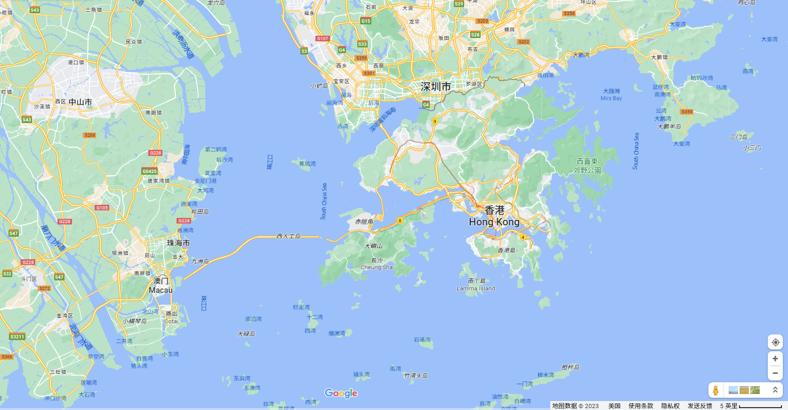

南方地区
自然特征与农业
南方地区位于秦岭-淮河以南，青藏高原以东，东面和南面分别濒临黄海、东海、南海
地形
- 南方地形东西差异明显
- 西部以高原和盆地为主
- 东部有交错分布的平原、低山、丘陵
- 沿江有面积较大的平原和三角洲
- 云贵高原
- 四川盆地
- 长江中下游平原
- 东南丘陵
气候---气候湿热，雨热同期
南方地区属于湿润的亚热带和热带季风气候，夏季高温多雨，冬季温和少雨
北回归线穿过南方地区南部，南方地区多位于亚热带
南方纬度低气温高，最热月平均气温28-30℃,最冷月平均气温＞0℃
南方地区降水分配，年平均降水量＞800mm，处于湿润区
土壤
在湿热条件下发育了红色土壤，南方地区被称为红土地
注意：红土地呈酸性，不适宜种庄稼等，适合种茶叶
四川盆地被称为紫色盆地
重要的水田农业区
水田的分布特点：水田集中连片；山区水田零散分布在河谷和缓坡
南方地区发展农业的优势条件
- 纬度低，光热条件好，气温高
- 距海近，降水丰沛，水源充足
- 雨热同期
南方地区的农作物
- 油料作物：油菜
- 糖料作物：甘蔗
- 主要粮食作物：水稻
- 经济作物：茶、香蕉等
鱼米之乡---长江三角洲地区
范围：主要包括上海市、江苏省南部和浙江省北部地区
位置：位于长江下游地带，濒临黄海和东海，地处江海交界之地
地形：地势低平，河网密布，湖泊星罗
气候
- 亚热带季风气候，夏季高温多雨，冬季温和少雨
- 降水丰沛，雨热同期，光热充足，利于农业生产
长江三角洲地区适宜发展农业的有利因素---地形-气候-河流
- 地处平原，地势低平
- 气候温暖
- 降水丰沛
- 河网密布，湖泊星罗（灌溉+发展淡水渔业）
- 沿江沿海，交通发达
长江三角洲地理位置重要性---地处江海交汇之地，是南北海上交通枢纽
- 依托长江干支流发达的水运，可联系广大的内陆地区
- 地处江海交汇之地，沿江沿海港口众多
- 是我国南北海上航运的中枢
长江三角洲地区成为我国人口最为密集和最大城市群的原因
- 地处平原，地形平坦
- 沿江沿海交通便利
- 气候温暖湿润，适宜居住
- 河网密布水源充足
- 是“鱼米之乡”，经济发达
答题方法-河流对地区发展的影响---水源-水能-淡水鱼-航运...
- 提供灌溉水源，有利于农业发展
- 提供水路交通，有利于其对外联系
- 提供淡水资源，有利于淡水渔业发展
- 冲积形成平原，为农业生产和城市建设提供空间
- 河流落差较大的地方，提供水能资源
我国最大的城市群
历史文化名城：南京、苏州、杭州、扬州
目前，长江三角洲是我国城市分布最密集、经济发展水平最高的地区，形成了我国最大的城市群--长江三角洲城市群
上海市
- 长江三角洲的核心城市
- 是全国最大的城市
- 我国最重要的综合性工业城市
- 带动作用：随着浦东的开发开放，上海对长三角洲地区的辐射带动作用进一步增强
水乡的文化特色与旅游
旅游景点
- 苏州园林
- 水乡风貌
补充：发展旅游业的条件---资源-设施-服务
- 丰富的旅游资源
- 完善的基础设施建设
- 优质的服务
- 便利的交通
第三节-东方明珠-香港和澳门
位置
香港和澳门地处我国大陆的东南端，分别位于珠江口东、西两侧，与广东省相邻
香港的组成:香港岛、九龙、新界
- 我国政府于1997年7月1日恢复对香港行使的主权，成立香港特别行政区
- 我国政府于1999年12月12日恢复对澳门行使主权，成立澳门特别行政区
- 我国政府制定“一国两制”政策，祖国内地实行社会主义制度；港澳实行资本主义制度
人多地少
香港人多地少，且山地多，平地少
香港扩建城市用地的方式
- 建设高层建筑
- 填海造陆
港澳与我国内地的密切联系
香港的经济特点
- 是世界著名的自由贸易港
- 是重要的国际金融中心、贸易中心、信息服务中心及航运中心
- 自然资源缺乏
有利
不利
澳门的经济特点
- 博彩旅游业发达，是其经济发展的支柱产业
港澳所需的淡水、食物、原料、燃料等生产和生活资料主要依靠祖国内地稳定供应
香港和内地的经济合作优势互补、互惠互利
经济合作模式--前店后厂
- 店：香港利用海外贸易窗口优势，承接海外订单，从事样品制造和开发新产品、新工艺、供应原材料、元器件、控制产品质量，推广和销售
- 厂：珠江三角洲地区利用土地、自然资源和劳动力优势，对产品进行加工、制造
祖国的神圣领土-台湾省
台湾省的组成：台湾岛、澎湖列岛、钓鱼岛等许多小岛
台湾岛北临东海，东临太平洋，南临南海，西隔台湾海峡与福建相望
台湾岛是我国面积最大的岛屿
纬度位置：北回归线穿过台湾岛中南部，属于亚热带和热带
地形
- 以山地为主
- 平原主要分布在西部沿海地区
- 台湾岛属于亚热带、热带季风气候，冬季温暖，夏季炎热，雨量充沛,降水主要来自太平洋上的东南季风
- 夏秋多台风暴雨
台湾岛河流短急，水能丰富
台湾岛上最长的河流是浊水溪，最大的湖泊是日月潭
台湾岛位于太平洋板块与亚欧板块交界处
玉山高3952米，是我国东部最高峰
旅游资源
- 野柳地质公园
- 日月潭
台湾岛森林面积大，被称为“亚洲天然植物园”
资源：森林、矿产、水产资源丰富
台湾经济发展条件
- 大量受过教育和培训的劳动力
- 海岛多港口
- 吸取外国资本
- 大力建设出口加工区
| 时间 | 经济模式 |
| 20世纪50年代 | 以农业和农产品加工为主 |
| 60-90年代 | 进口-加工-出口 |
| 90年代 | 高新技术产业为主 |
出口贸易一直是台湾重要的经济命脉
跳转到下个文档-八下地理第十八章--西北地区